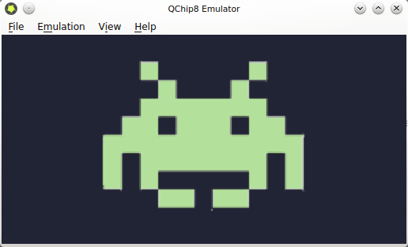

Se há algo na área de games que sempre me chamou a atenção, sem dúvida, são os emuladores. Sempre achei fantástico a ideia de poder rodar jogos e aplicativos de um sistema em outro sistema totalmente diferente. Então, semanas atrás resolvi estudar um pouco sobre esse tipo de aplicação. Após algumas pesquisas, vi que criar um emulador para o CHIP8 é um ótimo passo para quem não possui experiência em desenvolvimento de emuladores, devido a sua simplicidade.

CHIP8 é uma linguagem de programação interpretada usada na década de 70 nos computadores COSMAP VIP e TELMAC 1800. Os programas em CHIP8 são executados sobre uma máquina virtual própria. Assim, o emulador que implementei é na verdade um emulador dessa máquina virtual, e não dos computadores onde ela rodava. A linguagem foi muito usada por entusiastas em desenvolvimento de games.
O QChip8 Emulator foi implementado usando C++ para as rotinas de emulação e Qt para a interface. O emulador ainda não tem som, o que não atrapalha em nada a diversão já que o som do CHIP8 original era um simples tom. Todos os jogos do CHIP8 são em preto-e-branco, então implementei vários temas de cores para quem não gostar do tema clássico. As Roms dos jogos do CHIP8 são gratuitas e podem ser encontrados fazendo uma simples busca no Google por "CHIP8 roms".
Futuramente pretendo escrever uma série de tutoriais demonstrando os passos para criar um emulador do CHIP8 (e quem sabe, de outros emuladores também).
Se você já tem experiência em programação é não quer esperar meus tutoriais, segue os links que usei para estudar:
Aqui você pode conferir mais informações do QChip8 Emulator.
Segue o link do emulador para quem desejar estudá-lo e/ou usá-lo: clique aqui. Futuramente pretendo também disponibilizar uma pacote .deb e .rmp para distribuições Linux.
É isso pessoal. Até a próxima!